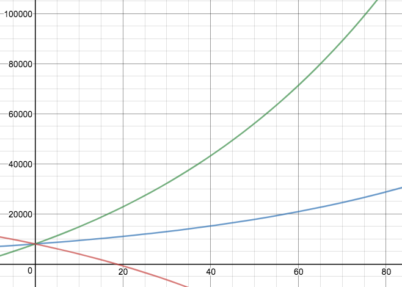
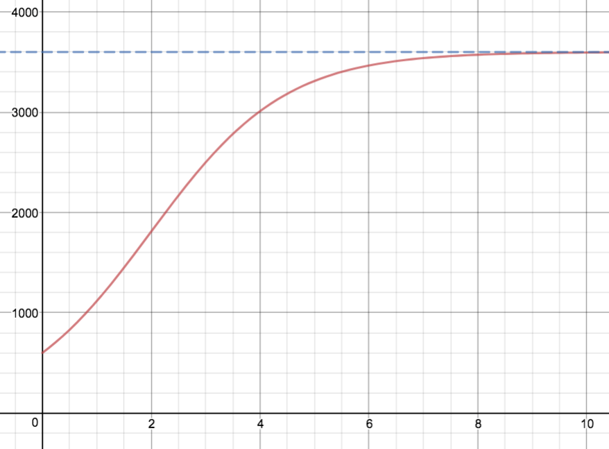

Section 5.2 Équations différentielles
¶On peut utiliser Sage pour résoudre une équation différentielle.
Par exemple, voici comment obtenir la solution générale implicite de l'équation différentielle ordinaire \(\displaystyle\frac{dy}{dx}=\frac{e^y+1}{3x^2e^y}\)
ou la solution particulière impicite de l'équation différentielle \(\displaystyle\frac{dv}{dt}=\sqrt{vt}\) soumise à la condition \(v(4)=9\)
Exercice 5.2.1.
Parmi les fonctions suivantes, lesquelles sont des solutions de l'équation différentielle \(y''+y=\sin x\text{?}\)
\(\displaystyle y=\sin x\)
\(\displaystyle y=\cos x\)
\(\displaystyle y=-\frac{1}{2}x\cos x\)
\(\displaystyle y=\frac{1}{2}x\sin x\)
pas solution
pas solution
solution
pas solution
Exercice 5.2.2.
Déterminez la solution de l'équation différentielle qui vérifie la condition initiale donnée.
\(\displaystyle \frac{dy}{dx}=\frac{x}{y}\) et \(\displaystyle y(0)=-3\)
\(\displaystyle \frac{dy}{dx}=\frac{\ln x}{xy}\) et \(\displaystyle y(1)=2\)
\(\displaystyle \frac{du}{dt}=\frac{2t+\sec^2 t}{2u}\) et \(\displaystyle u(0)=-5\)
\(\displaystyle y=-\sqrt{x^2+9}\)
\(\displaystyle y=\sqrt{(\ln x)^2+4}\)
\(\displaystyle u=-\sqrt{t^2+\tan t+25}\)
Exercice 5.2.3.
Une famille de courbes est telle qu'en tout point d'une de ces courbes, la pente de la tangente est égale au quotient du carré de l'abscisse par la quatrième puissance de l'ordonnée du point de tangence.
Déterminez l'équation générale de cette famille de courbes.
Déterminez l'équation de la courbe de cette famille dont l'ordonnée à l'origine est 2.
solution générale : \(\displaystyle y=\sqrt[5]{\frac{5}{3}x^3+C}\)
solution particulière : \(\displaystyle y=\sqrt[5]{\frac{5}{3}x^3+32}\)
Exercice 5.2.4.
Déterminez la ou les solutions explicites des équations différentielles suivantes.
\(\displaystyle\frac{dv}{dt}=\sqrt{vt}\) où \(v>0\text{,}\) \(t>0\) et la courbe passe par le point \(P(4;9)\)
\(\displaystyle\frac{dy}{dx}=\frac{e^y+1}{3x^2e^y}\)
\(\displaystyle\frac{dP}{dt}=kP\) où \(P(t)>0\text{,}\) \(k>0\)
\(\displaystyle\sec\theta\frac{dy}{d\theta}=y^4\) et la courbe passe par le point \(\displaystyle P\left(\frac{\pi}{6};\frac{1}{2}\right)\)
deux solutions : \(\displaystyle v(t)=\frac{\left(\sqrt{t^3}+1\right)^2}{9}\) et \(\displaystyle v(t)=\frac{\left(\sqrt{t^3}-17\right)^2}{9}\)
solution générale : \(\displaystyle y=\ln \left(Ce^{-\frac{1}{3x}}-1\right)\)
solution générale : \(\displaystyle P=Ce^{kt}\)
une solution : \(\displaystyle y=\sqrt[3]{\frac{19}{2}-\sin\theta}\)
Exercice 5.2.5.
Une quantité \(Q\) de substance radioactive se désintègre de sorte que son taux de désintégration est proportionnel en tout temps à la quantité restante. La demi-vie de cette substance est de \(t=12\) heures.
Déterminez l'équation différentielle à laquelle \(Q(t)\) obéit.
Quelle proportion d'une quantité donnée \(Q_0\) reste-t-il après \(7\) heures?
Combien de temps faut-il attendre pour qu'il n'en reste plus que \(1\%\text{?}\)
\(\displaystyle \frac{dQ}{dt}=-kQ\) où \(k>0\)
\(\displaystyle 2^{-\frac{7}{12}}\approx 66,7\%\)
\(\displaystyle \frac{24}{\log(2)}\approx 79\) heures \(43\) minutes \(35\) secondes
Exercice 5.2.6.
-
Soit \(P\) la population d'une ville dont le taux continu de natalité est de \(3,5\,\%\) par année, et dont le taux continu de mortalité est de \(1,9\,\%\) par année. En 2007, cette population était de 8000 habitants. On note \(t\) le nombre d'années écoulées depuis 2007.
Déterminez l'équation différentielle correspondant à cette situation.
Donnez la solution particulière de cette équation différentielle.
Quelle sera la population de cette ville en 2025?
Cette population doublera-t-elle un jour? Si oui, en quelle année?
Cette population finira-t-elle par s'annuler? Si oui, en quelle année?
Mêmes questions qu'au 1, si 500 personnes quittent la ville chaque année.
Mêmes questions qu'au 1, si 500 personnes s'installent dans cette ville chaque année.
-
Identifiez la situation à laquelle correspond chacune des courbes de population du graphique ci-après.

\(\displaystyle\frac{dP}{dt}=0,016 P\)
\(\displaystyle P=8000 e^{0,016t}\)
\(\displaystyle\approx 10670\)
Oui, au cours de l'année 2050.
Non.
\(\displaystyle\frac{dP}{dt}=0,016 P-500\)
\(\displaystyle P=31250-23250e^{0,016t}\)
\(\displaystyle\approx 240\)
Non.
Oui, au cours de l'année 2025.
\(\displaystyle\frac{dP}{dt}=0,016 P+500\)
\(\displaystyle P=39250e^{0,016t}-31250\)
\(\displaystyle\approx 21100\)
Oui, au cours de l'année 2018.
Non.
La courbe décroissante correspond à la question 3. Celle qui croît le plus correspond à la question 2. Celle du milieu correspond à la question 1.
Exercice 5.2.7.
Un écologiste estime qu'un lac artificiel peut contenir un maximum de 3600 brochets. Nous ensemençons ce lac avec 600 brochets. Supposons qu'un modèle logistique de croissance s'applique à cette population \(P\) avec une constante de proportionnalité égale à 0,000225 lorsque le temps écoulé \(t\) est compté en mois.
Donnez l'équation logistique correspondante.
Résolvez cette équation afin d'exprimer le nombre de brochets en fonction du temps.
Déterminez le nombre de brochets après un an.
Dans combien de temps la population de brochets aura-t-elle atteint \(90\,\%\) de la capacité maximale du lac?
\(\displaystyle\frac{dP}{dt}=0,000225\,P(3600-P)\)
\(\displaystyle P=\frac{3600}{1+5e^{-0,81t}}\)
\(\displaystyle \approx 3599\)
\(\displaystyle \approx 4,7\) mois
Il n'était pas demandé, mais voici le graphique de la fonction \(P\) en fonction du temps \(t\text{:}\)
